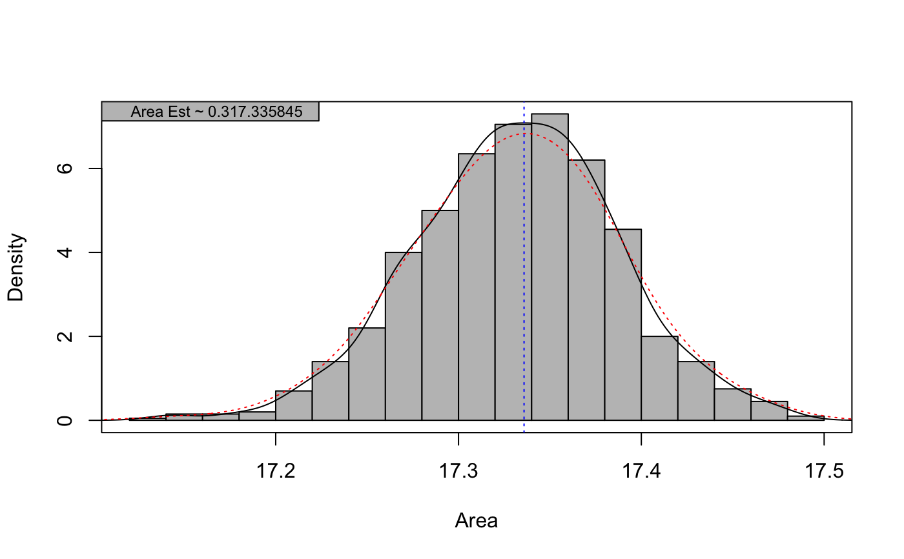

Solving indefinite integrals via Monte-Carlo Monte-Carlo integration of any unknown function of "x" via simulation. Calculates the area under the curve by picking numerous points and deciding if that point falls above or below the curve. This demo shows the method of Monte-Carlo and how it can be used to estimate the integral (area under a function) over a given interval of "x". Simulation mimics a random dart thrown on a dartboard style algorithm.
MonteCarloIntegral(n = 10000, interval, FUN, force = FALSE, quick = TRUE, plot = FALSE)
| n | Integer. How many points to use in the estimation. Defaults to 10000 |
|---|---|
| interval | Range of "x" over which the function should be evaluated |
| FUN | The function to integrate. Can be any function |
| force | Logical. Should a brute force method be used to find
the maximum of "y". This can sometimes be useful to avoid missing
the global maximum via |
| quick | Logical. Should a vectorized implementation be used? |
| plot | Logical. Should the simulation be plotted upon completion?
This option is ignored if |
Numeric estimation of the integral (area below the curve). If
quick = FALSE, a real-time plot of the function with randomly added
points colored by above and below the function is generated
When quick = TRUE, a quicker implementation is used which uses
vectorized random number generation and optional plotting (plotting
is slow). This vectorized version is >100x faster than the "slow" version
when plotting turned off.
This demo is for students to visually see how the Monte-Carlo Integration works. Includes an iteration counter & a run time indicator.
put references to the literature/web site here
# set objective function to optimize mysteryFun <- function(x) { 20*dnorm(x, mean=-1, sd=5) + ifelse(x > -1.1, 6*dgamma(x=x+1,shape=2,scale=0.5), 1.5*dgamma(x=-x,shape=5,scale=0.2)) + 2*dgamma(x=2.75-x, shape=3, scale=0.25) } # compare quick=T vs. quick=F if (FALSE) { MonteCarloIntegral(n = 10000, interval = c(-2.98, 2.98), FUN = mysteryFun, quick = FALSE) MonteCarloIntegral(n = 10000, interval = c(-2.98, 2.98), FUN = mysteryFun) } # 1000 simulations head(MC_sims)#> [1] 17.43649 17.20891 17.36063 17.36099 17.25185 17.30087mean(MC_sims)#> [1] 17.33164# Plot histogram of 1000 estimates hist(MC_sims, col = "gray75", prob = TRUE, xlab = "Area", main = "", breaks = 15)box()# check that histogram sums to 1 H <- hist(MC_sims, plot = FALSE) print(sum((H$breaks[2]-H$breaks[1]) * H$density), digits = 10)#> [1] 1